The standard normal law is the probability measure on  with
density
with
density
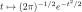
with respect to Lebesgue measure; a random variable with that law is written , and its
characteristic function is
, and its
characteristic function is 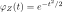
.
Let  be independent, identically distributed and
square-integrable, with mean
be independent, identically distributed and
square-integrable, with mean  , variance
, variance
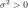
, and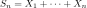
. Put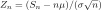
. Then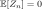
,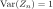
, and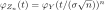
, where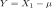
.Centring and scaling give the mean and the variance by linearity and by
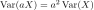
, the variance of being
being
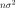
by independence. For the characteristic function,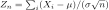
is a sum of independent variables each distributed as
independent variables each distributed as
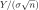
, so its characteristic function is the product of the equal factors 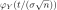
.With the notation above,
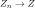
in distribution: for every ,
,
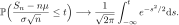
Let , so
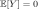
and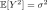
. By the expansion at zero,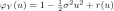
with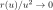
as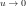
.Fix
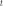
and put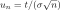
, so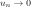
. By the previous proposition,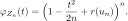
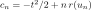
, so that the bracket is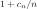
; then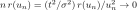
, so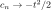
. For complex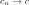
one has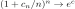
– taking logarithms of the principal branch, which is legitimate for large since 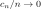
, and using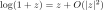
. Hence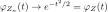
for every .
The limit is continuous at  , so Levy's continuity theorem gives
in distribution, which is the displayed convergence at
every – the distribution function of being continuous
everywhere.
, so Levy's continuity theorem gives
in distribution, which is the displayed convergence at
every – the distribution function of being continuous
everywhere.
Under the hypotheses above, for every  ,
,
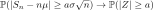
, whereas Chebyshev's inequality gives only the bound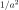
for every.
The event is
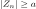
, and its probability is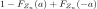
up to the boundary points, which have probability in the limit because 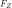
is continuous; convergence in distribution at the continuity points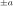
gives the limit. The Chebyshev bound is the previous note's inequality applied to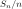
with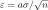
.
Two hypotheses are doing all the work and neither is decorative. Finite
variance is necessary – with heavier tails the correct scaling is not
 and the limit is not normal – and identical distribution
can be weakened but not dropped, the honest condition being Lindeberg's.
What is not needed is any assumption on the shape of the law of
and the limit is not normal – and identical distribution
can be weakened but not dropped, the honest condition being Lindeberg's.
What is not needed is any assumption on the shape of the law of
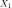
, and that is the content of the theorem: the limit forgets everything except the first two moments.